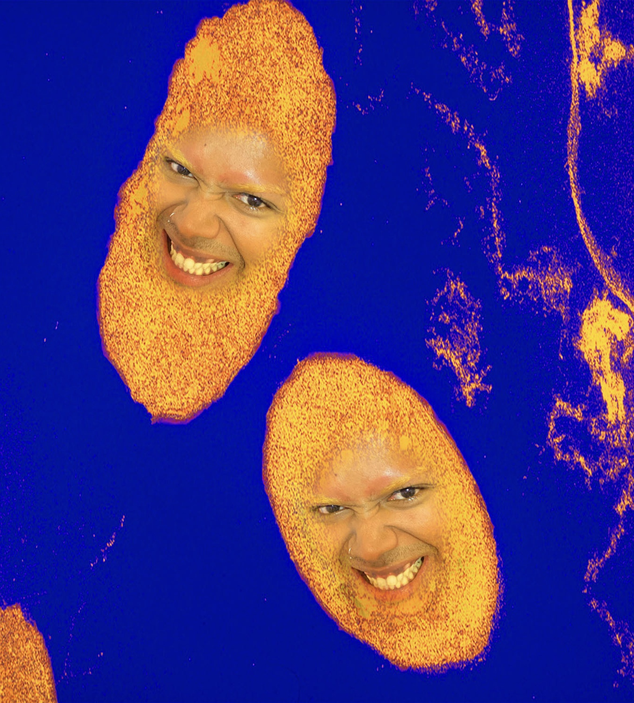

Even though the information we have about the Berty-gene seems like a lot its just the tip of the iceberg. Scientist are still diving deeper into the origin of the primeval gene uncovering more truth with each piece of informtaion. By 2025, NASA said that we will be 50% closer to finding the true origin of the gene that came from the cosmos.
WHAT A RIDE, TAKE ME HOME 🛸